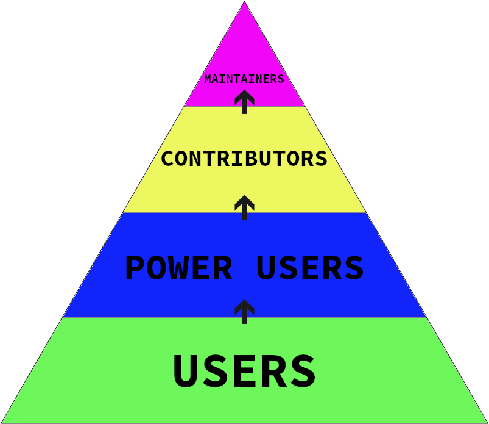

name: inverse layout: true class: center, middle, inverse --- # A Spotlight a thirty minute proposal in the form of a presentation for developer relations @ github .footnote[by tom callaway - 2020-05-27] ??? I made this! --- .center[] ??? There is no dispute. GitHub is the largest home for open source. But with over 50 million users and almost 40 million repositories, getting a project noticed can be challenging. --- layout: false .left-column[ ## Core Goals ] .right-column[ To gain momementum, early-stage open source projects need to: - find new users - find new contributors ] ??? Early-stage open source projects face a daunting challenge as they attempt to accomplish two fundamental goals: finding new users and finding new contributors. These goals are key to both the health and the growth of the project. --- .left-column[ ## Goals ## The Path ] .right-column[ - These goals are connected - No one contributes to an open source project they do not use.red[*] .footnote[.red[*] Okay, almost no one] ] ??? These two goals are tied to each other since virtually no one contributes to an open source project that they do not use personally. Over time, some users become “power users”, some “power users” become contributors, and some contributors become “top contributors”, eventually even maintainers. --- .left-column[ ## The Problem ## The Path ## The Pyramid ] .right-column[ .center[  ] ] ??? This evolution can be modeled as a pyramid. At each stage of the pyramid, some people will stay at the level they are at, but in a healthy project, a percentage of participants will move up over time. --- # Introduction --- name: last-page template: inverse ## Thank you! Slideshow created using [remark](http://github.com/gnab/remark). p